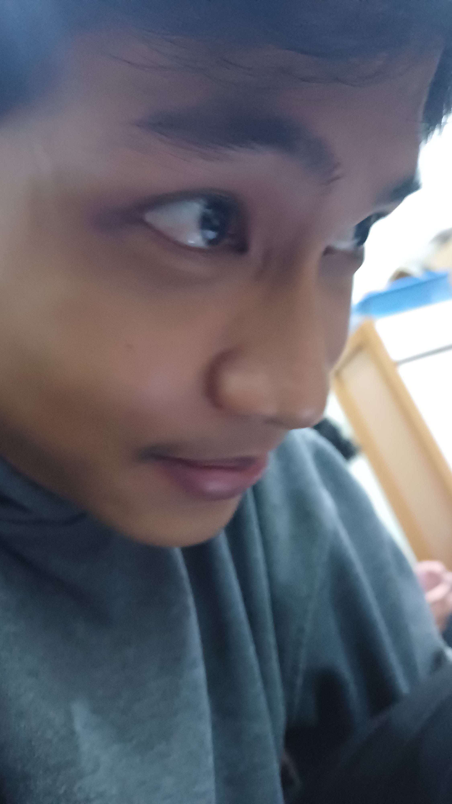

Halo, Saya
Muhammad Faadhil Muharram
Mahasiswa Teknik Elektro yang bersemangat dalam mengembangkan infrastruktur cerdas melalui integrasi Sistem IoT, model analitik Machine Learning, dan Web Development untuk menciptakan solusi teknologi yang aplikatif dan berdampak nyata.

Tentang Saya
Sebagai Mahasiswa Teknik Elektro di Universitas Brawijaya, saya memiliki ketertarikan mendalam pada persimpangan antara perangkat keras dan perangkat lunak. Saya aktif mendalami Internet of Things (IoT) untuk otomasi sistem, merancang algoritma Machine Learning untuk memecahkan masalah berbasis data, dan membangun antarmuka Web yang responsif untuk visualisasi data secara real-time. Saya selalu antusias mengeksplorasi teknologi baru yang dapat membawa efisiensi di berbagai sektor.
Keahlian & Teknologi
Internet of Things
Berpengalaman dengan mikrokontroler (ESP32, ESP8266), integrasi sensor lingkungan (DHT22, MQ135), dan protokol komunikasi IoT.
Machine Learning
Pemrograman Python, pemrosesan data, klasifikasi algoritma, dan perancangan model prediktif untuk analisis perilaku.
Web Development
Pengembangan antarmuka responsif menggunakan HTML, CSS, JavaScript, dan integrasi backend untuk dashboard IoT.
Technical Prototyping
Desain komponen 3D (Blender/CAD), 3D Printing, serta penulisan dokumentasi teknis dan matematis tingkat lanjut menggunakan LaTeX.
Etalase Proyek

Smart Maggot Farm Berbasis IoT
Sistem automasi pengelola limbah organik menggunakan larva BSF di Pasar Singosari. Memanfaatkan sensor suhu dan gas untuk optimasi hasil konversi. Dokumentasi proyek ini mengutamakan penggunaan diagram sirkuit visual untuk mempresentasikan penyelesaian masalah rekayasa kelistrikannya dengan sangat jelas.

ML Habit & Learning Analyzer
Analisis kebiasaan belajar menggunakan model Machine Learning untuk mengevaluasi matriks data siswa. Sistem ini dirancang untuk mendeteksi tingkat kelelahan kognitif dan secara otomatis merekomendasikan pola serta durasi belajar yang paling personal dan optimal.
Jejak Prestasi
Juara 3 Dekan Cup FT-UB 2025
Skema PKM-PI (Penerapan Iptek)
Meraih posisi ketiga dalam ajang kompetisi inovasi teknologi tingkat fakultas melalui rancangan implementasi teknologi berbasis penerapan langsung di masyarakat.
Juara 2 PKM Champion Cup UB
Skema PKM-PI (Penerapan Iptek)
Berhasil meraih juara kedua di tingkat universitas, membuktikan kelayakan teknis dan skalabilitas proyek inovasi dalam kompetisi Program Kreativitas Mahasiswa.
Mari Berkolaborasi
Tertarik untuk berdiskusi tentang teknologi, proyek kolaborasi, atau peluang lainnya? Jangan ragu untuk menghubungi saya melalui platform di bawah ini.